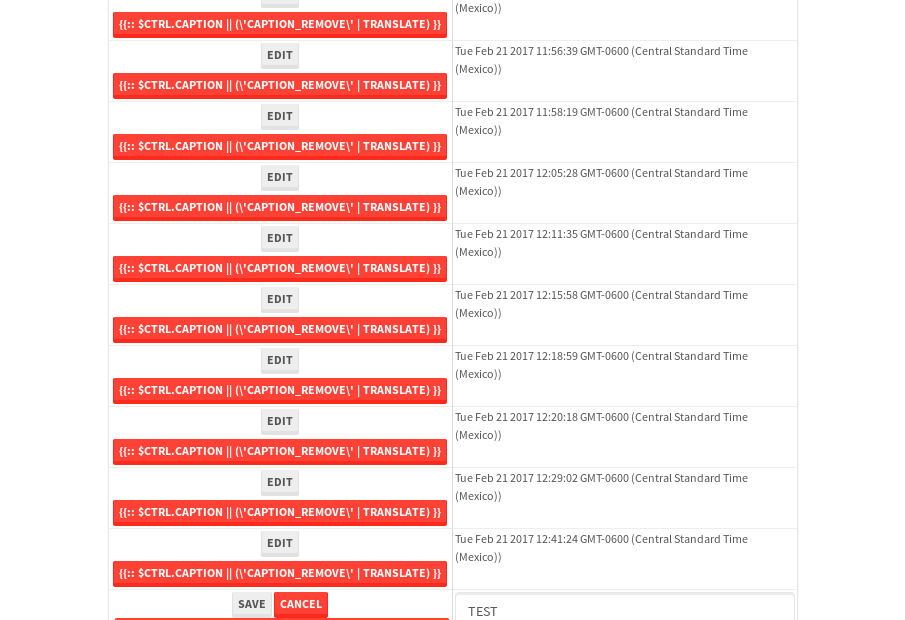
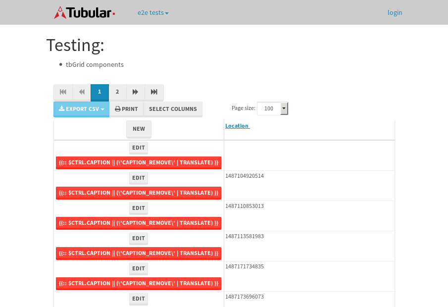

tbColumn.Grid Sorting - 25.343sTests: 5Skipped: 0Failures: 0 should sort data in ascending order then on descending order when sorting by Order Id column - 5.031sTests passed: 100.00%should order data in ascending order when click-sorting an unsorted text column - 4.745sTests passed: 100.00%should order data in descending order when click-sorting an ascending-sorted text column - 5.476sTests passed: 100.00%should order data in ascending order when click-sorting an unsorted date column - 4.942sTests passed: 100.00%should order data in descending order when click-sorting twice an unsorted date column - 5.147sTests passed: 100.00%
tbEmptyForm - 3.199sTests: 3Skipped: 0Failures: 1 should have an empty required field - 0.678sTests passed: 100.00%should not be able to click on save - 0.485sExpected null not to be null null.✗Tests passed: 50.00%should load default value for numeric field - 0.508sTests passed: 100.00%
Tubular Filters.tbColumnFilter - 105.396sTests: 12Skipped: 0Failures: 0 should cancel filtering when clicking outside filter-popover - 9.321sTests passed: 100.00%should disable Value text-input for "None" filter - 6.439sTests passed: 100.00%should disable apply button for "None" filter - 6.842sTests passed: 100.00%should decorate popover button when showing data is being filtered for its column - 12.072sTests passed: 100.00%should correctly filter data for the "Equals" filtering option - 7.784sTests passed: 100.00%should correctly filter data for the "Not Equals" filtering option - 8.188sTests passed: 100.00%should correctly filter data for the "Contains" filtering option - 8.266sTests passed: 100.00%should correctly filter data for the "Not Contains" filtering option - 8.054sTests passed: 100.00%should correctly filter data for the "Starts With" filtering option - 6.958sTests passed: 100.00%should correctly filter data for the "Not Starts With" filtering option - 6.798sTests passed: 100.00%should correctly filter data for the "Ends With" filtering option - 6.691sTests passed: 100.00%should correctly filter data for the "Not Ends With" filtering option - 6.799sTests passed: 100.00%
Tubular Filters.tbColumnDateTimeFilter - 133.853sTests: 12Skipped: 0Failures: 0 should cancel filtering when clicking outside filter-popover - 7.38sTests passed: 100.00%should disable Value text-input for "None" filter - 6.686sTests passed: 100.00%should disable apply button for "None" filter - 6.574sTests passed: 100.00%should clear filtering when clicking on Clean button - 17.656sTests passed: 100.00%should decorate popover button when showing data is being filtered for its column - 11.768sTests passed: 100.00%should correctly filter data for the "Equals" filtering option - 6.691sTests passed: 100.00%should correctly filter data for the "Not Equals" filtering option - 6.752sTests passed: 100.00%should correctly filter data for the "Between" filtering option - 12.384sTests passed: 100.00%should correctly filter data for the "Greater-or-equal" filtering option - 11.871sTests passed: 100.00%should corretlly filter data for the "Greater" filtering option - 12.01sTests passed: 100.00%should correctly filter data for the "Less-or-equal" filtering option - 11.849sTests passed: 100.00%should correctly filter data for the "Less" filtering option - 11.542sTests passed: 100.00%
Tubular Filters.tbColumnOptionsFilter - 80.729sTests: 3Skipped: 0Failures: 0 should cancel filtering when clicking outside filter-popover - 8.764sTests passed: 100.00%should decorate popover button when showing data is being filtered for its column - 11.962sTests passed: 100.00%should filter column-elements in accordance to the selected filter when selecting a single option - 49.245sTests passed: 100.00%
Tubular Filters.tbTextSearch - 47.94sTests: 5Skipped: 0Failures: 0 min-chars is not set - 1.055sTests passed: 100.00%should filter data in searchable-column customer name to matching inputted text, starting from 3 characters - 6.724sTests passed: 100.00%should filter data in searchable-column shipper city to matching inputted text, starting from 3 characters - 11.955sTests passed: 100.00%should show clear button when there is inputted text only - 6.459sTests passed: 100.00%should clear filtering when clicking clear button - 16.206sTests passed: 100.00%
tbForm related components.tbCheckboxField - 6.128sTests: 2Skipped: 0Failures: 0 should save changes on "SAVE" - 2.84sTests passed: 100.00%should discard changes on "CANCEL" - 1.761sTests passed: 100.00%
tbForm related components.tbDropDownEditor - 11.321sTests: 5Skipped: 0Failures: 0 should set initial input value to the value of "value" attribute when defined - 1.707sTests passed: 100.00%should show the component name value in a label field when "showLabel" attribute is true - 2.027sTests passed: 100.00%should show a help field equal to this attribute, is present - 1.655sTests passed: 100.00%should submit modifications to item/server when clicking form "Save" - 2.444sTests passed: 100.00%should NOT submit modifications to item/server when clicking form "Cancel" - 2.829sTests passed: 100.00%
tbForm related components.tbTextArea - 15.245sTests: 7Skipped: 0Failures: 0 should set initial input value to the value of "value" attribute when defined - 1.599sTests passed: 100.00%should be invalidated when the number of chars is not in the range of "min" and "max" attributes - 2.018sTests passed: 100.00%should show the component name value in a label field when "showLabel" attribute is true - 1.49sTests passed: 100.00%should show a help field equal to this attribute, is present - 1.751sTests passed: 100.00%should require the field when the attribute "required" is true - 2.677sTests passed: 100.00%should submit modifications to item/server when clicking form "Save" - 2.825sTests passed: 100.00%should NOT submit modifications to item/server when clicking form "Cancel" - 2.107sTests passed: 100.00%
tbForm related components.tbDateEditor - 12.125sTests: 6Skipped: 0Failures: 0 should set initial date value to the value of "value" attribute when defined - 1.45sTests passed: 100.00%should be invalidated when the date is not in the range of "min" and "max" attributes - 2.166sTests passed: 100.00%should show the component name value in a label field when "showLabel" attribute is true - 1.689sTests passed: 100.00%should show a help field equal to this attribute, is present - 1.537sTests passed: 100.00%should submit modifications to item/server when clicking form "Save" - 2.154sTests passed: 100.00%should NOT submit modifications to item/server when clicking form "Cancel" - 2.12sTests passed: 100.00%
tbForm related components.tbTypeaheadEditor - 15.257sTests: 7Skipped: 0Failures: 0 should show an options list when there is an API-info/component entered-data - 2.126sTests passed: 100.00%should select the option clicked - 2.028sTests passed: 100.00%should show a "delete" button when an option/match is selected, and delete the option if button is clicked - 2.181sTests passed: 100.00%should show a label value equal to the component name when "showLabel" attribue is true - 1.684sTests passed: 100.00%should require a value when "require" attribute is true - 1.946sTests passed: 100.00%should submit modifications to item/server when clicking form "Save" - 2.852sTests passed: 100.00%should NOT submit modifications to item/server when clicking form "Cancel" - 1.958sTests passed: 100.00%
tbForm related components.tbSimpleEditor - 19.646sTests: 9Skipped: 0Failures: 0 should set initial input value to the value of "value" attribute when defined - 2.007sTests passed: 100.00%should be invalidated when the number of chars is not in the range of "min" and "max" attributes - 2.086sTests passed: 100.00%should show the component name value in a label field when "showLabel" attribute is true - 1.678sTests passed: 100.00%should set input placeholder to the value of "placeholder" attribute - 2.094sTests passed: 100.00%should validate the control using the "regex" attribute, if present - 1.706sTests passed: 100.00%should show a help field equal to this attribute, is present - 1.618sTests passed: 100.00%should require the field when the attribute "required" is true - 1.849sTests passed: 100.00%should submit modifications to item/server when clicking form "Save" - 3.739sTests passed: 100.00%should NOT submit modifications to item/server when clicking form "Cancel" - 2.167sTests passed: 100.00%
tbForm related components.tbNumericEditor - 15.523sTests: 7Skipped: 0Failures: 0 should set initial component value to the value of "value" attribute when defined - 1.589sTests passed: 100.00%should be invalidated when the entered number is not in the range of "min" and "max" attributes - 2.247sTests passed: 100.00%should show the component name value in a label field when "showLabel" attribute is true - 2.052sTests passed: 100.00%should show a help field equal to this attribute, is present - 1.556sTests passed: 100.00%should require the field when the attribute "required" is true - 1.825sTests passed: 100.00%should submit modifications to item/server when clicking form "Save" - 2.931sTests passed: 100.00%should NOT submit modifications to item/server when clicking form "Cancel" - 2.757sTests passed: 100.00%
tbForm Connection Error NoModelKey - 2.332sTests: 1Skipped: 0Failures: 0 tbForm connection error functionality - 0.431sTests passed: 100.00%
tbForm Connection Error NoServerUrl - 2.357sTests: 1Skipped: 0Failures: 0 tbForm connection error functionality - 0.44sTests passed: 100.00%
tbGridComponents - 28.684sTests: 6Skipped: 0Failures: 4 should add item with newRow method - 4.51sTests passed: 100.00%should add item with newRow method and cancel action - 1.421sTests passed: 100.00%should update item with tbSaveButton - 19.019sExpected '' to be 'TEST'.✗Tests passed: 0.00%should NOT update item on cancel Update action - 0.803sFailed: ElementNotVisibleError✗Tests passed: 0.00%should remove item with tbRemoveButton - 0.815sFailed: No element found using locator: By(css selector, div.popover)✗Tests passed: 0.00%should NOT remove item on cancel Remove action - 0.711sFailed: No element found using locator: By(css selector, div.popover)✗Tests passed: 0.00%
tbGridPager.navigation buttons - 9.133sTests: 1Skipped: 0Failures: 0 should perform no action when clicking on the numbered navigation button corresponding to the current-showing results page - 1.268sTests passed: 100.00%
tbGridPager.navigation buttons.first/non-last results page related functionallity - 3.897sTests: 2Skipped: 0Failures: 0 should disable "first" and "previous" navigation buttons when in first results page - 1.887sTests passed: 100.00%should enable "last" and "next" navigation buttons when in a results page other than last - 2.008sTests passed: 100.00%
tbGridPager.navigation buttons.last/non-first results page related functionallity - 3.968sTests: 2Skipped: 0Failures: 0 should disable "last" and "next" navigation buttons when in last results page - 1.836sTests passed: 100.00%should enable "first" and "previous" navigation buttons when in a results page other than first - 2.132sTests passed: 100.00%
tbGridPager.page navigation - 7.65sTests: 5Skipped: 0Failures: 0 should go to next results page when clicking on next navigation button - 1.913sTests passed: 100.00%should go to previous results page when clicking on previous navigation button - 1.597sTests passed: 100.00%should go to last results page when clicking on last navigation button - 1.363sTests passed: 100.00%should go to first results page when clicking on first navigation button - 1.564sTests passed: 100.00%should go to corresponding results page when clicking on a numbered navigation button - 1.213sTests passed: 100.00%
tbGridPagerInfo - 4.459sTests: 2Skipped: 0Failures: 0 should show text in accordance to numbered of filter rows and current results-page - 1.276sTests passed: 100.00%should show count in footer - 0.848sTests passed: 100.00%
tbHttp - 17.473sTests: 8Skipped: 1Failures: 1 should be authenticated - 2.974sTests passed: 100.00%retrieve data - 2.414sTests passed: 100.00%should not login bad credentials - 2.378sExpected '' to be 'false'.✗Tests passed: 0.00%should have a refresh token - 2.621sTests passed: 100.00%should remove authentication - 2.388sTests passed: 100.00%get method-Is not authenticated - 2.219sTests passed: 100.00%post method-Is not authenticated - 2.477sTests passed: 100.00%should regenerate access token on post - 0.001s***Skipped***Tests passed: 0%
tbPageSizeSelctor - 9.174sTests: 4Skipped: 0Failures: 0 should filter up to 10 data rows per page when selecting a page size of "10" - 2.01sTests passed: 100.00%should filter up to 20 data rows per page when selecting a page size of "20" - 1.496sTests passed: 100.00%should filter up to 50 data rows per page when selecting a page size of "50" - 2.088sTests passed: 100.00%should filter up to 100 data rows per page when selecting a page size of "100" - 2.042sTests passed: 100.00%
tbRowSelectable - 9.513sTests: 2Skipped: 0Failures: 0 selected rows - 4.922sTests passed: 100.00%unselected rows - 2.748sTests passed: 100.00%
tbSingleForm - 18.087sTests: 8Skipped: 1Failures: 0 should load correct info - 0s***Skipped***Tests passed: 0%should change customer name - 2.594sTests passed: 100.00%should save it - 3.007sTests passed: 100.00%should clear the inputs - 2.346sTests passed: 100.00%should update - 2.881sTests passed: 100.00%should reset editor - 2.19sTests passed: 100.00%should not save if not Changes - 2.364sTests passed: 100.00%should not be able to click on save - 2.705sTests passed: 100.00%


{kind=link}
{kind=link}